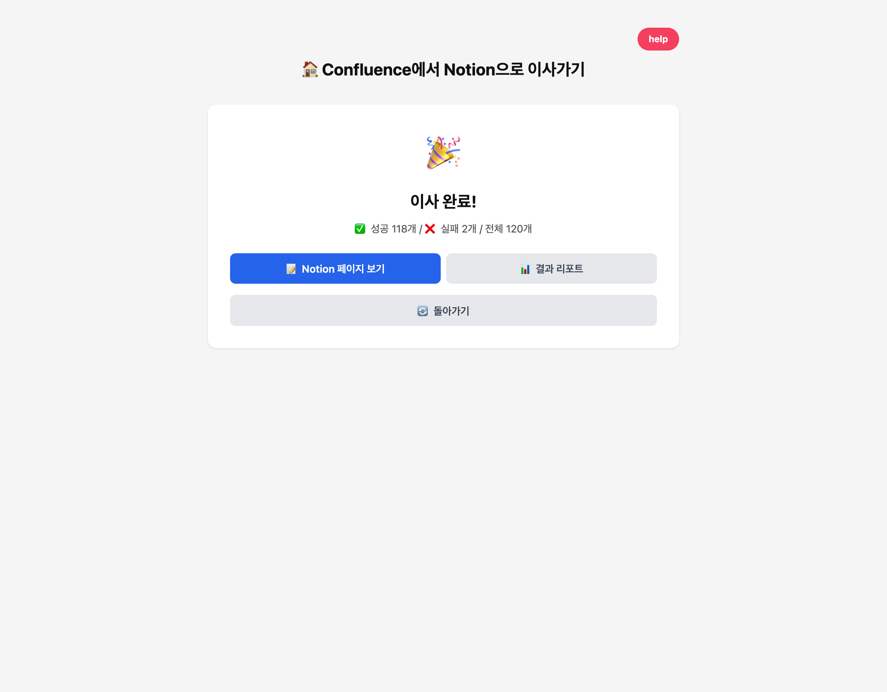
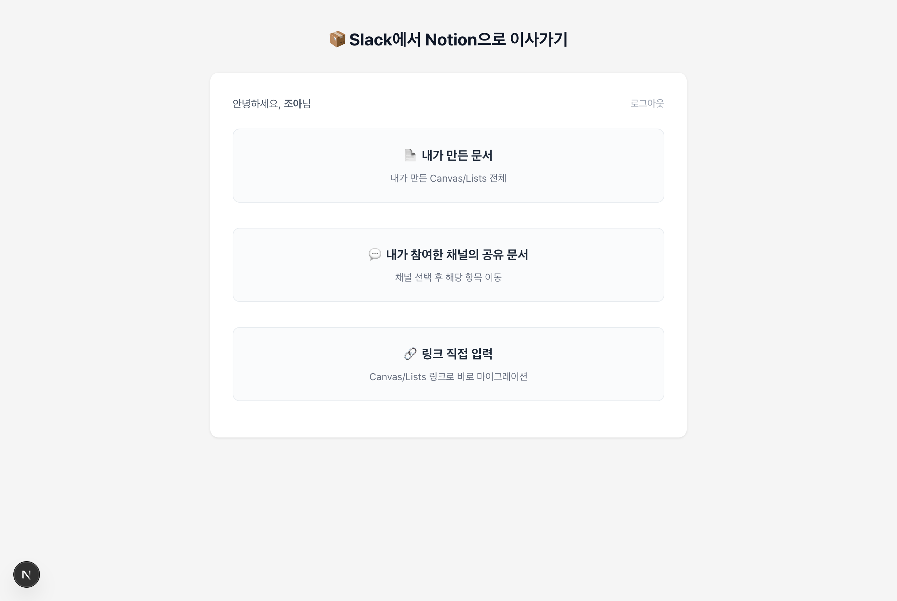
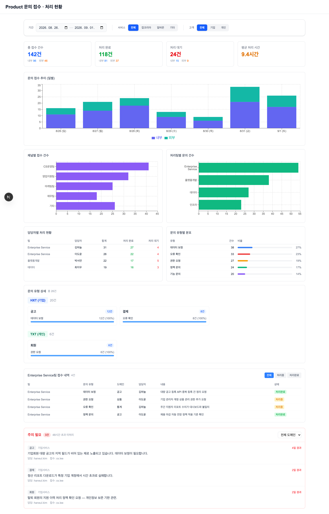

문서 이관 도구
10년 넘게 사용한 Confluence에서 Notion으로 문서를 옮기게 됐습니다. 각 팀의 담당자가 직접 이관해야 했지만, 당시 사용해 본 내보내기 방식으로는 코드 블록과 표, 이미지와 첨부파일을 온전히 옮기기 어려웠습니다. 문서마다 내용을 복구하는 수고를 줄이려고 Claude Code로 이관 도구를 만들었습니다.
요구사항을 정하고 AI로 구현한 뒤 실제 문서로 검수했습니다. 설치형 앱과 사용 가이드를 배포했고, 프로덕트와 엔지니어링, 디자인뿐 아니라 영업과 사업전략 부서에서도 사용했습니다. Slack Canvas 문서를 옮기는 도구도 별도로 만들었습니다.
문서와 함께 상하위 관계도 옮기기
사용자가 본인 계정으로 로그인해 원본 페이지와 Notion 목적지를 지정하면 하위 페이지까지 옮기도록 했습니다. 스페이스마다 접근 권한이 달라 각자의 권한 안에서 실행할 수 있어야 했습니다.
Confluence의 상하위 페이지 관계는 따로 저장했습니다. 먼저 Notion에 페이지를 만들고, 사용자가 위키로 전환하면 도구의 업데이트 기능으로 관계를 연결했습니다. 화면에는 현재 진행 중인 작업과 사용자가 다음에 할 일을 안내했습니다.
깨지거나 누락된 내용을 찾아 보완하기
페이지가 생성돼도 내용이 제대로 옮겨졌는지는 별도로 확인해야 했습니다. 오류가 잦았던 코드 블록과 탭 형태의 콘텐츠, 표가 있는 문서를 추려 원본과 대조하며 수정했습니다.
문서가 많거나 네트워크 응답이 늦으면 이관이 중단되기도 했습니다. 페이지 그룹별로 나눠 실행하도록 안내하고, 결과 리포트에서 처리한 문서와 남은 작업을 확인할 수 있게 했습니다. 표 안의 이미지 누락이나 첨부파일 용량 제한도 표시해 담당자가 보완할 곳을 찾도록 했습니다.
사용 가이드에는 예상 소요 시간과 오류가 생길 수 있는 상황을 정리했습니다. 리포트에 오류가 없더라도 중요한 문서는 직접 확인하도록 안내했습니다.

Slack Canvas 문서도 Notion으로
Slack에 쌓인 문서도 옮길 수 있도록 별도의 도구를 만들었습니다. 본인 계정으로 로그인한 뒤 직접 만든 문서나 채널의 공유 문서를 고르고, 링크로도 이전 대상을 지정할 수 있게 했습니다. 목적지를 정하면 진행 상태와 결과 리포트를 확인할 수 있습니다.

AI로 만든 도구를 실제 업무에 쓰기까지
Claude Code를 활용하면서 문서 이관에 필요한 기능을 직접 만들고 동료에게 배포할 수 있었습니다. 실제 문서를 넣어 보니 코드가 실행되는 것과 업무에 쓸 수 있는 결과가 나오는 것은 달랐습니다. 표가 깨지거나 첨부가 빠지는 사례를 직접 찾아 수정하고, 자동으로 옮기기 어려운 내용은 사용자가 확인할 수 있도록 남겼습니다.
AI로 구현할 수 있는 범위가 넓어질수록, 업무에서 무엇을 보존해야 하는지 설명하고 결과를 검수하는 일이 중요해졌습니다. 이관이 끝난 뒤 동료가 남은 작업을 파악하고 문서를 계속 사용할 수 있어야 도구를 만들었다는 의미가 있었습니다.
Sustain 대시보드
구인자 서비스 전체를 담당하는 팀을 맡았을 때, 구성원들은 고객 문의와 내부 요청을 처리하느라 많은 시간을 쓰고 있었습니다. 접수는 Slack과 사내 포털, 개인 DM으로 흩어져 있었습니다. 모두 바쁘다는 것은 알았지만 어떤 일이 얼마나 쌓이고 누구에게 몰리는지는 보이지 않았습니다.
먼저 문의를 접수하고 처리 상황을 확인할 공통 기준, SSOT(Single Source of Truth)를 만들었습니다. 접수는 Slack으로 모으고 내부 요청과 고객 문의를 채널로 구분했습니다. 답변으로 끝나는 일은 채널에서 처리하고, 조사나 개발이 필요한 일은 Notion 인박스에 남겨 진행을 추적했습니다.
모인 기록을 AI로 분석해 업무량을 드러내기
기록이 모이자 그동안 눈에 보이지 않던 운영 업무를 분석할 수 있었습니다. Claude Code로 Sustain 대시보드를 구현하고 AI를 활용해 문의 유형과 도메인을 분류했습니다. 플랫폼별 문의량과 미처리 내역, 담당자별 분포를 확인하고, 접수 때 지정된 팀과 실제 처리한 팀을 나눠 보았습니다.
처음 집계는 제가 현장에서 파악한 상황과 차이가 있었습니다. 주차별 기록을 대조하며 누락과 분류 오류를 찾고, 개인 및 그룹 멘션을 분류에 활용했습니다. 완료 이모지와 이를 누른 사람으로 처리 상태와 담당자를 구분하도록 기록 규칙도 보완했습니다.

바쁜 이유를 확인하고, 처리 역할을 바꾸기
분석해 보니 제품의 판단이 필요한 일과 정해진 정책을 안내하면 되는 일이 같은 담당자에게 모이고 있었습니다. 문의가 많다는 사실뿐 아니라, 제품 담당자가 매번 관여하지 않아도 될 업무가 얼마나 쌓이는지 볼 수 있었습니다.
가상 예시로 문의 200건 중 정책 안내가 80건이라면, 전체의 40%는 정책서를 바탕으로 답할 수 있는 일입니다. 이런 식으로 문의를 나누어 어떤 업무를 제품 조직이 직접 맡아야 하는지 검토했습니다.
※ 200건, 80건, 40%는 분석 방식을 설명하기 위한 임의 수치이며 실제 집계값이 아닙니다.
실제로는 정책과 기능의 판단은 도메인 담당 조직에 두고, 이미 정해진 정책의 안내는 지원 조직이 직접 답변하도록 바꿨습니다. 팀 안에서도 도메인 수만으로 담당 범위를 나누지 않고, 실제 운영 업무량을 고려해 담당자를 재조정했습니다.
AI 분석으로 보이지 않던 조직의 비효율을 보기
문의 기록을 공통 기준으로 모으고 AI로 분석하자, 각자가 따로 감당하던 운영 업무의 크기가 드러났습니다. 반복되는 정책 안내와 특정 담당자에게 몰리는 일을 함께 보면서, 어디에 조직의 시간과 판단이 소모되는지 구체적으로 이야기할 수 있었습니다.
이 경험에서 AI를 잘 활용하기 위한 출발점은 분석할 기록을 남기는 일이었습니다. 접수 경로와 처리 상태가 제각각이면 결과를 해석하기 어려웠습니다. 기록 기준을 정리하고 AI의 분류를 실제 업무와 대조한 덕분에, 분석 결과를 처리 역할과 담당 범위를 바꾸는 근거로 쓸 수 있었습니다.